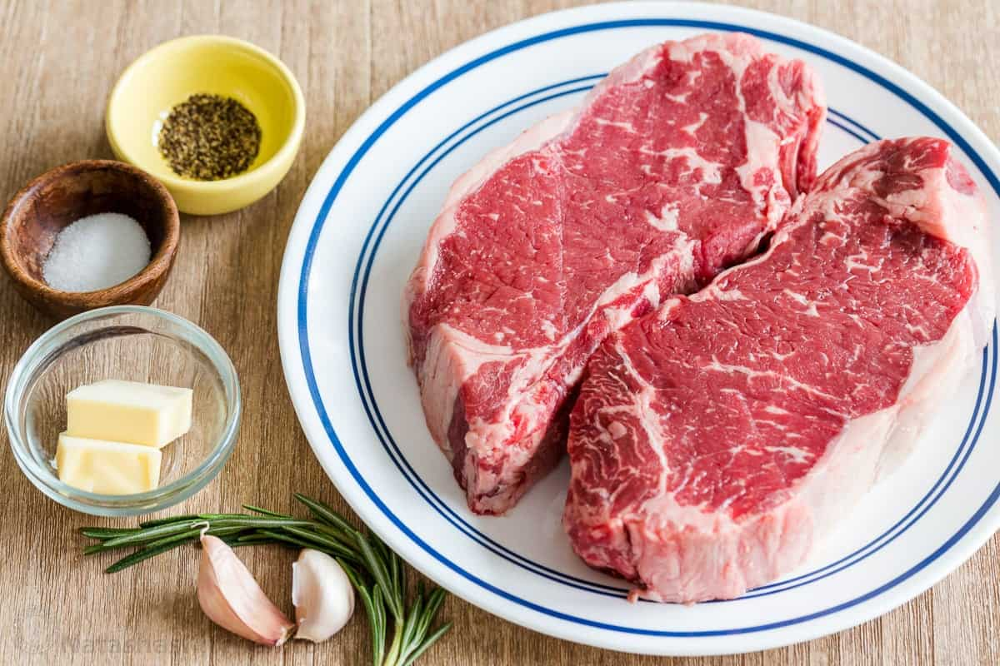

Steak

recipe link
Description
This Pan-Seared Steak has a garlic rosemary-infused butter that makes it taste
steakhouse quality. You’ll be impressed at how easy it is to make the perfect steak
– seared and caramelized on the outside, and so juicy inside.
This 20-minute recipe is done on the stovetop in one pan (no need to finish it
in the oven). This is one of our favorite steak recipes and we make it year-round
because it’s such a quick and convenient cooking method. That garlic butter is
lip-smacking good! Read on for great tips on how to improve , reduce food waste
and you will love our ideas for easy meal prep with leftover steak.
Ingredients
- 2 lbs New York Strip Steaks (2 steaks),
or Ribeye or Top Sirloin Steaks (1 lb
each steak, 1 1/4” thick)
- 1/2 Tbsp vegetable oil, or any high
heat cooking oil like canola or extra
light olive oil
- 1 1/2 tsp sea salt
- 1 tsp black pepper, freshly ground
- 2 Tbsp unsalted butter
- 2 cloves garlic, peeled and quartered